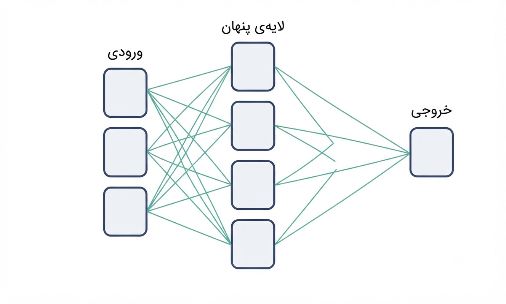
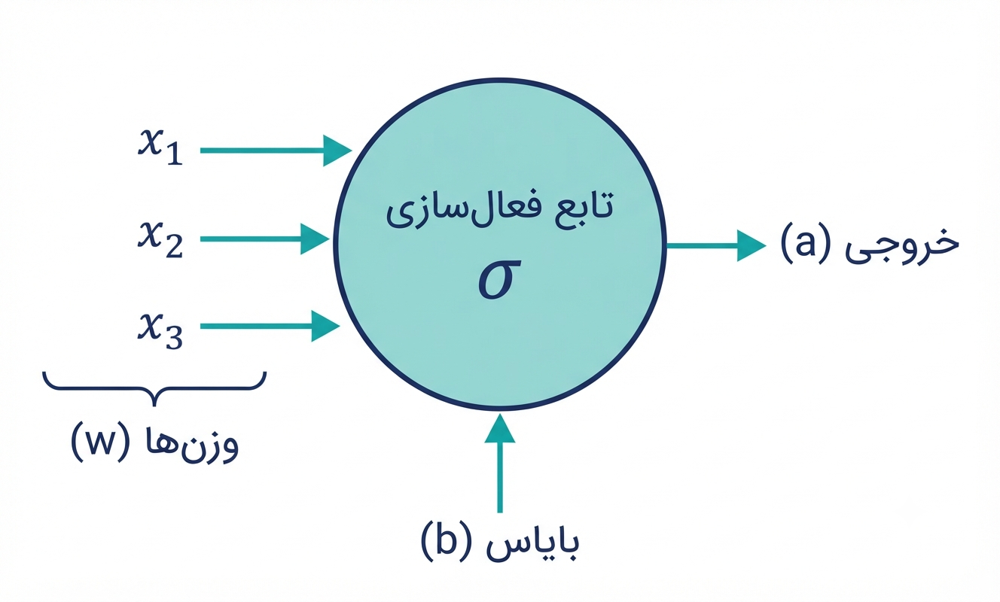
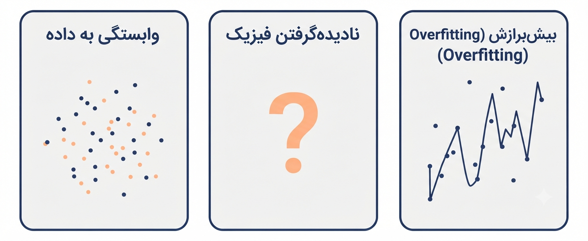

پس از مطالعهٔ این فصل، شما قادر خواهید بود:
پیش از ورود به بحث PINN، ضروری است تا درک دقیقی از عملکرد شبکههای عصبی معمولی (NN) و محدودیتهای آنها در کاربردهای مهندسی بهدست آوریم. یک شبکهٔ عصبی معمولی را میتوان بهعنوان یک تقریبزن جهانی (Universal Approximator) برای توابع پیوسته در نظر گرفت که صرفاً بر اساس دادههای ورودی-خروجی آموزش میبیند.
با ارائهٔ تعداد کافی از نقاط نمونهبرداریشده، این شبکه قادر است نگاشتی بین ورودی و خروجی بیابد که در محدودهٔ دادههای آموزشی از دقت قابلقبولی برخوردار است. با این حال، ذات دادهمحور این رویکرد، شبکه را بهشدت به کمیت و کیفیت دادههای آموزشی وابسته میسازد. در غیاب دادههای کافی در تمامی نقاط دامنه، شبکه فاقد هرگونه اطلاعات جانبی برای تولید پیشبینیهای قابلاعتماد خواهد بود.
این ویژگی، نقطهٔ تمایز اساسی NN با PINN را شکل میدهد:
NN صرفاً از داده یاد میگیرد، در حالی که PINN از معادلات دیفرانسیل حاکم بر مسئله نیز بهره میگیرد.

پرسپترون چندلایه (Multi-Layer Perceptron - MLP)، متداولترین معماری شبکههای عصبی در مسائل مهندسی است. ساختار این شبکه از سه بخش اساسی تشکیل میشود:
این لایه، دادههای خام مسئله را دریافت میکند. در مسائل وابسته به زمان، ورودی میتواند یکبعدی (زمان $t$) باشد. در مسائل میدانی، ورودی شامل مختصات مکانی-زمانی ($x, y, t$) خواهد بود. تعداد نورونهای این لایه با تعداد متغیرهای مستقل مسئله برابر است.
هستهٔ محاسباتی شبکه در این لایهها شکل میگیرد. هر لایهٔ پنهان شامل چندین نورون مصنوعی (Neuron) است که هر یک محاسبهای مستقل اما همراستا با سایر نورونها انجام میدهند. هرچه تعداد لایهها و نورونها افزایش یابد، ظرفیت شبکه برای یادگیری توابع با پیچیدگی بالاتر نیز بیشتر میشود. با این حال، افزایش بیرویهٔ این پارامترها میتواند به پدیدهٔ بیشبرازش (Overfitting) منجر شود.
این لایه، پاسخ نهایی شبکه را تولید میکند. برای مسائل اسکالر (مانند پیشبینی دما یا جابهجایی)، این لایه شامل یک نورون است. برای مسائل چندمتغیره (مانند پیشبینی میدان تغییرمکان در دو راستا)، تعداد نورونهای خروجی به تعداد کمیتهای مجهول افزایش مییابد.
در معماری MLP، هر نورون از یک لایه به تمامی نورونهای لایهٔ بعدی متصل است. به این ساختار، «تماماتصال (Fully Connected)» نیز گفته میشود.
برای درک عمیقتر از عملکرد یک شبکهٔ عصبی، ضروری است تا جایگاه و عملکرد هر نورون را بهصورت ریاضی بررسی کنیم. فرض کنید یک نورون، بردار ورودی $\mathbf{x} = [x_1, x_2, ..., x_n]$ را دریافت میکند. این نورون دارای بردار وزن $\mathbf{w} = [w_1, w_2, ..., w_n]$ و یک مقدار بایاس اسکالر $b$ است. عملیات انجامشده در این نورون به دو مرحله قابل تفکیک است:

مرحلهٔ ۱: ترکیب خطی (Linear Combination)
مرحلهٔ ۲: اعمال تابع فعالسازی غیرخطی (Nonlinear Activation)
در این معادله، $\sigma(\cdot)$ نشاندهندهٔ تابع فعالسازی است. انتخاب تابع فعالسازی تأثیر مستقیمی بر توانایی شبکه در یادگیری توابع غیرخطی دارد. برای PINN، انتخاب $\tanh$ یا $\sin$ بهدلیل مشتقپذیری از تمامی مرتبهها، مرسومتر است. انتخاب توابعی مانند ReLU که مشتق دوم آنها در بخش اعظم دامنه صفر است، برای مسائل مبتنی بر معادلات دیفرانسیل مرتبهٔ دوم یا بالاتر توصیه نمیشود.
آموزش یک شبکهٔ عصبی، فرآیندی تکراری است که طی آن پارامترهای شبکه بهگونهای اصلاح میشوند تا تابع هزینه (Loss Function) کمینه شود. این فرآیند از چهار مرحلهٔ اصلی تشکیل شده است:
دادههای ورودی از لایهٔ ورودی عبور کرده، پس از طی لایههای پنهان و اعمال توابع فعالسازی، در نهایت خروجی شبکه ($\hat{y}$) در لایهٔ خروجی تولید میشود.
خطای شبکه با مقایسهٔ خروجی پیشبینیشده ($\hat{y}$) با مقدار واقعی ($y$) محاسبه میشود. متداولترین تابع هزینه در مسائل رگرسیون، میانگین مربعات خطا (MSE) است:
در این گام، با استفاده از قاعدهٔ زنجیرهای (Chain Rule)، گرادیان تابع هزینه نسبت به تمامی وزنها و بایاسهای شبکه محاسبه میشود. این محاسبات از لایهٔ خروجی به سمت لایهٔ ورودی (بهصورت معکوس) انجام میشوند.
با استفاده از گرادیانهای محاسبهشده، وزنها و بایاسها در جهت مخالف گرادیان حرکت داده میشوند تا مقدار تابع هزینه کاهش یابد. این کار توسط یک بهینهساز (Optimizer) مانند Adam یا SGD انجام میشود.
با وجود موفقیتهای چشمگیر شبکههای عصبی در حوزههای مختلف، کاربرد آنها در مسائل مهندسی با سه چالش اساسی مواجه است:

یک شبکهٔ عصبی معمولی، فاقد هرگونه دانش پیشینی از قوانین حاکم بر مسئله است. در مسائل مهندسی، دادهها همواره محدود، پراکنده و همراه با نویزهای اندازهگیری هستند.
مثال مرتبط با راهآهن: فرض کنید فقط دادههای شتاب چند نقطهٔ محدود از واگنهای یک قطار (بهدلیل محدودیت نصب سنسور) در دسترس است. یک شبکهٔ عصبی معمولی در نقاط فاقد سنسور، پاسخ ارتعاشی بیربطی پیشبینی میکند.
شبکههای عصبی معمولی هیچگونه آگاهی از اصول بقا یا قوانین ترمودینامیک ندارند.
مثال مرتبط با راهآهن: شبکه ممکن است دمای یاتاقانهای واگن را بهگونهای پیشبینی کند که از دمای محیط پایینتر باشد، یا پاسخ ارتعاشی بوژی را بهگونهای تخمین بزند که با قوانین دینامیک نیوتن در تناقض باشد.
زمانی که ظرفیت شبکه (تعداد لایهها و نورونها) در مقایسه با حجم دادههای آموزشی بسیار زیاد باشد، شبکه بهجای یادگیری الگوی کلی حاکم بر دادهها، اقدام به «حفظ کردن» دادهها میکند.
در این فصل، به بررسی ساختار، فرآیند آموزش و محدودیتهای شبکههای عصبی معمولی در کاربردهای مهندسی پرداخته شد. دریافتیم که:
پل به فصل سوم:
با درک این محدودیتها، در فصل سوم بهسراغ چارچوب PINN خواهیم رفت. نشان خواهیم داد که چگونه معادلات دیفرانسیل حاکم بر مسئله، بهعنوان قیودی سخت در تابع هزینه گنجانده میشوند و چگونه این رویکرد، هر سه چالش مذکور را بهصورت همزمان مرتفع میسازد.